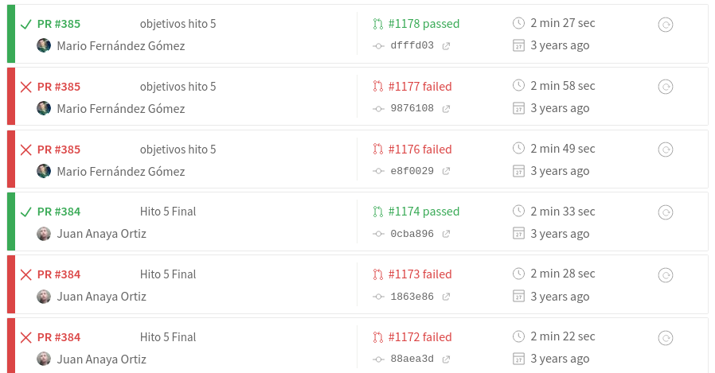

Integración continua en 2021
Construyendo, probando y desplegando tu código ahora mismo
@jjmerelo | github.com/JJImágenes y texto cc-by-sa
37 años programando
33 en la UGR
12 en GitHub
Integración/despliegue continuo == CI
Pasar a producción cada vez que se
fusione en la rama principal
Esto viene de la práctica de Extreme
programming, que aboga por pasar a producción varias veces
al día, con ciclos de desarrollos muy rápidos, y todo el
mundo trabajando sobre la rama principal
En la antigüedad se crearon las build
tools
Los Makefiles tienen su propio
DSL
HTML = $(patsubst %.md,%.html,$(wildcard *.md))
all: $(HTML)
$(HTML): %.html: %.md
pandoc $< -o $@
En realidad esto es gmake,
más nuevo y potente que el original make,
pero una herramienta muy interesante de todas formas y con
muchas posibilidades. make analiza un grafo de dependencias,
para realizar tareas de forma incremental y sólo las
necesarias para llegar a los objetivos.
En el principio, fueron los sistemas de
control de fuentes
Luego llegó la programación extrema
Integración en producción y pasar a
producción rápidamente, peer programming, revisión de
código. Evita prácticas monolíticas y responde rápidamente a
las necesidades del cliente.
Y programación dirigida por test
Iniciada en 2003
por Kent Beck, extiende conceptos previos de programación
extrema.
Testeando en Perl
use Test::More;
BEGIN { plan tests => 6;
use_ok('Algorithm::Evolutionary::Individual::Bit_Vector');
};
my $length = 16;
my $indi = new Algorithm::Evolutionary::Individual::Bit_Vector, { length => $length }; # Build random bitstring with length 10
isa_ok( $indi, "Algorithm::Evolutionary::Individual::Bit_Vector" );
ok( $indi->size() == $length, 'Created with length' );
like( $indi->Atom( 7 ), qr/^\d$/, 'Bits set'); # ...
Este test
en concreto es de 2008 , y muestra las característias
clásicas de los tests: planificación (6 tests), creación
de los objetos, aserciones de diferentes tipos
Luego llegaron los build servers
CruiseControl, año 2001
Cuando quieres automatizar la
construcción
Estos "build servers" se fueron
extendiendo de forma natural en sistemas de integración
continua, con Hudson, y luego Jenkins, y finalmente sistemas
comerciales como Travis. Jenkins inauguró
"configuración-como-código" y el uso de YAML para este tipo
de sistemas.
Un desvío por DevOps
Desarrollo y operaciones, juntos
Infraestructura como código
Primer DevOps Days en
Bélgica, año 2008 . Primeras herramientas: Puppet,
CFEngine, y otras. Puppet es tan complicada que ni siquiera
he conseguido ver una manera fácil de mostrar un ejemplo.
Finalmente, integración continua
Travis
CI creado en 2012, inicialmente para RubySacado de aquí . Travis,
en 2021, ya no es lo que era
Escribir un libro, usar CI...
language: perl
perl:
- "5.14"
- "5.16"
before_install:
- sudo apt-get install libhunspell libhunspell-dev hunspell-en-us
script: "cd Text-Hoborg; perl Makefile.PL && make test"
CI en 2021: Una forma de vida
DevOps es
Infraestructura como códigoConfiguración como
códigoTests como códigoAutomatización y repetibilidad son lo
más importante. Pero también escalabilidad y poder hacer las
cosas rápidamente con degradación escasa de las prestaciones.
Aderezado con Travis.
branches:
except:
- gh-pages
language: perl
perl:
- "5.16"
before_install:
install: cpanm Test::More Test::Harness Git File::Slurper JSON Net::Ping TAP::Formatter::Color Term::ANSIColor
script: prove -cPrueba hasta que funcione.

Cambio fundamental: aprende mientras envías
Lo que está muerto, sí se puede matar
Presentando GitHub Actions
name: "Comprueba hitos y milestones"
on:
pull_request:
paths:
- 'proyectos/hito-[1234567].md'
- '!objetivos/*.(md|org)'
jobs:
obtain-repo:
runs-on: ubuntu-latest
steps:
- name: Extrae URL del repositorio
uses: JJ/github-pr-contains-action@releases/v1
with:
github-token: ${{github.token}}
filesChanged: 1
- name: Comprueba hitos e issues
uses: JJ/repo-in-diff-gh-action@releases/v0
with:
github-token: ${{github.token}}
minMilestones: 3En la primera parte miramos al
diff; en la segunda es donde efectivamente comprobamos los
milestones y demás.
Usando
el API de GitHub const milestones = await github.issues.listMilestonesForRepo( { owner: user, repo: repo } )
if ( ! milestones.data.length ) {
core.setFailed("❌ There should be at least one milestone")
}
const minMilestones = +core.getInput('minMilestones')
if ( minMilestones && milestones.data.length < minMilestones ) {
core.setFailed( "❌ There should be more than " + minMilestones + " milestone(s)");
}
var totalIssues = 0
var totalClosedIssues = 0
milestones.data.forEach( async function( milestone ) {
totalIssues += milestone.open_issues + milestone.closed_issues
totalClosedIssues += milestone.closed_issues
})
console.log( "✅ There are " + totalIssues + "
issues in your milestones and " + totalClosedIssues + "
closed issues ")Escritos en typescript, tienes
acceso a una serie de argumentos, pero lo más importante
es que puedes acceder fácilmente al API. Cuando empecé
con esto estaban en beta limitada, y la forma de
documentarse era a base de mirar los fuentes de las
actions y buscar en GitHub.
Docker FTW
FROM perl:5.32-slim-threaded
LABEL version="1.5" maintainer="JJ Merelo " perl5version="5.28"
# Set up dir and download modules
RUN chmod o+r /etc/resolv.conf
RUN mkdir /test && apt-get update \
&& apt-get install -y git curl libio-socket-ssl-perl libnet-ssleay-perl gcc \
&& cpanm Test::More Test::Harness Git File::Slurper JSON TAP::Formatter::Color Term::ANSIColor Mojo::UserAgent Net::Ping YAML
RUN perl --version
VOLUME /test
WORKDIR /test
ENTRYPOINT prove -I/usr/lib -c El tener todos los módulos
instalados es un ahorro de los aproximadamente dos
minutos y medio que se tarda. No es una gran cosa en
un sistema de producción, pero en los estudiantes es
la diferencia entre enviar y largarse y enviar y
esperar a ver qué pasa → mejora en el aprendizaje.
2020 📅 github script + API v4 (GraphQL)
const query = `query($owner:String!, $name:String!, $issue:Int!) {
repository(name: $name , owner: $owner ) {
issue(number: $issue) {
timelineItems(itemTypes: CLOSED_EVENT, last: 1) {
nodes {
... on ClosedEvent {
closer {
__typename
}
}
}
}
}
}
}`;